游戏研发经验
GAME PRODUCER 成都 · 可到岗
把休闲游戏，
从想法推进到
可验证的产品。
11 年游戏研发，从数值策划、主策划成长为制作人。擅长用数据拆解核心循环，以 MVP 控制范围，把玩法、商业化与团队交付接到同一条线上。
求职方向：休闲游戏制作人 / 主策划
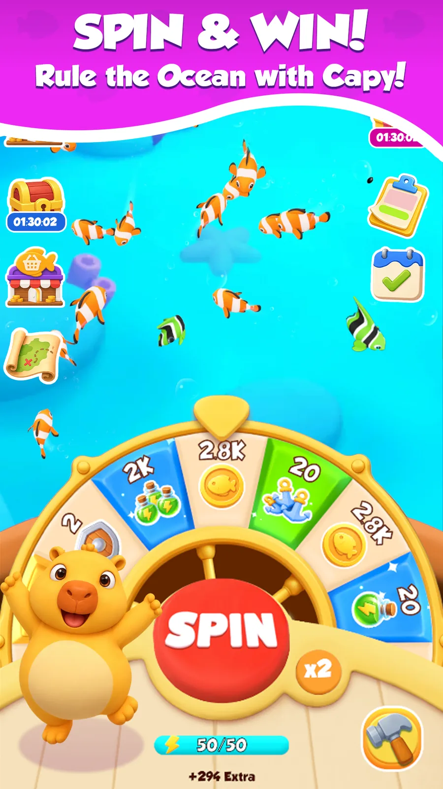
0 → 1
立项到首测包
6 周
完成 Demo
10 人
全栈团队交付
单项目累计流水
小游戏单月新增
跨职能团队统筹
项目数据按已确认的统计周期汇总。团队项目结果不等同于个人独立贡献。
SELECTED WORK / 01
不展示项目清单，
展示关键判断。
三个案例分别回答：如何做 0→1、如何承接规模化获客、如何重构存量产品的增长结构。
CASE 01 · 0→1 制作
CaptainCapy
“转盘 + 捕鱼”的海外休闲项目。重点不是把功能做多，而是在预算和团队约束内，把一个可首测版本完整交付出来。
角色制作人
团队10 人
预算批准 300 万 / 实投约 100 万
周期6 个月
状态首测包已上架，尚未测试
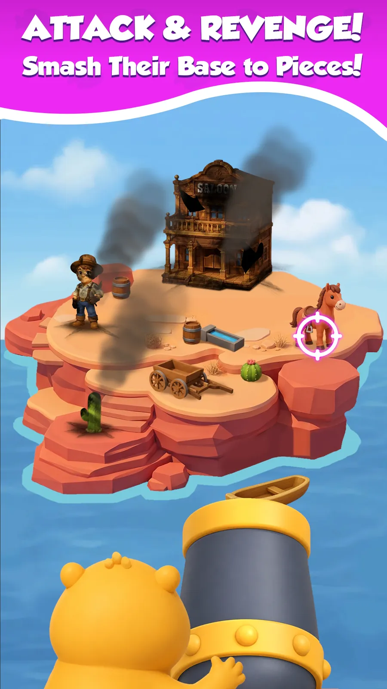
01
项目最难的不是“做玩法”，而是定义什么不做。
项目目标是用捕鱼强化转盘事件的视觉爽感，同时借 Coin Master 式资源循环承接长线。 原方案同时覆盖较大系统范围，但首测前真正需要验证的只有核心循环、首日体验和商业化入口。
决策点判断结果
卡牌系统
触达率低、理解成本高，并占用程序与美术资源。
删除，集中验证核心循环。
版本范围
首测前需要先保证项目“可验证”，而不是功能完整。
按 Demo、资产化、首测三个阶段推进。
发行准备
首测不仅要有包，还需要商店、支付与归因链路。
完成 Google Play、IAP 与归因基建。
02
把“制作人职责”收束成一条交付链路。
负责项目范围、里程碑、预算与发行基建；主导核心玩法、系统与数值框架；协调程序、美术、运营之间的优先级和验收。 删除卡牌系统释放约 20 人天程序工作与相应美术资源，团队随后在 6 周内完成 Demo、5 个月内完成首测包。
CORE LOOP
资源循环与捕鱼事件互相供能
01转盘抽取体力 / 金币 / 事件
→
02捕鱼 & 破坏视觉爽感 / 随机奖励
→
03金币 & 成长城建 / 解锁 / 活动
→
04回到转盘资源缺口驱动下一轮
复盘
项目证明了团队能够把 0→1 产品推到可测试阶段，但“可以测”不等于“验证成功”。 下一阶段的重点应放在匹配发行伙伴，用小规模测试验证 CPI、留存及 IAA/IAP 回收，而不是继续扩大内容范围。
CASE 02 · IAA 规模化
关关难不住
国内小游戏塔防项目。我的重心是把玩法组合、关卡节奏、养成线和新玩法接入同一套获客与回收逻辑。
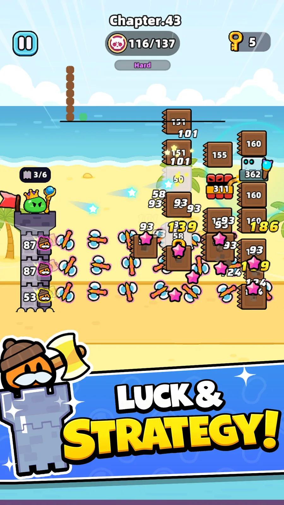
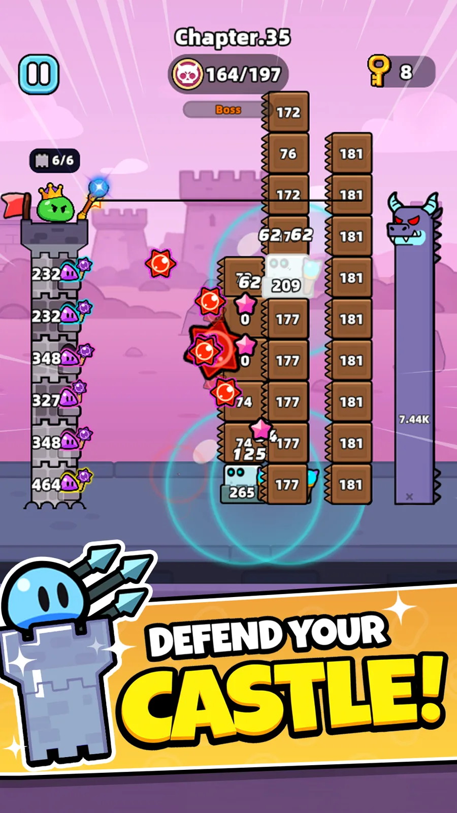
国内小游戏Roguelite 塔防IAA
规模化不是把广告点堆上去，而是让节奏与增长目标对齐。
项目进入抖音小游戏热门榜前 10，单月新增 1,200 万。我的直接负责范围包括立项和系统框架参与、关卡节奏、塔防养成线与玩法数值； 项目结果来自产品、发行与运营团队的共同工作。
01用关卡难度曲线承接短期留存与广告节奏
02用养成与周边系统承接首日之后的长期目标
03通过独立新玩法寻找新的起量入口
IAA FUNNEL / 2026.03
数据看板展示项目阶段性结果，指标口径来自已确认的统计周期。
单月新增用户
次留
广告收入 / 用户
30 日用户价值
判断链
起量瓶颈 → 扩充养成与新玩法 → 承接更大用户规模 → 用难度与广告节奏维护前 7 日回收
“小游戏的核心不是单点玩法，而是首日理解成本、前七天留存与广告回收能否同时成立。”
关关难不住 · 项目复盘CASE 03 · 存量调优
合合合英雄
已进入长线运营的海外休闲产品。项目问题不是“再做一个新系统”，而是修复历史数值失衡，让新内容重新有增长空间。
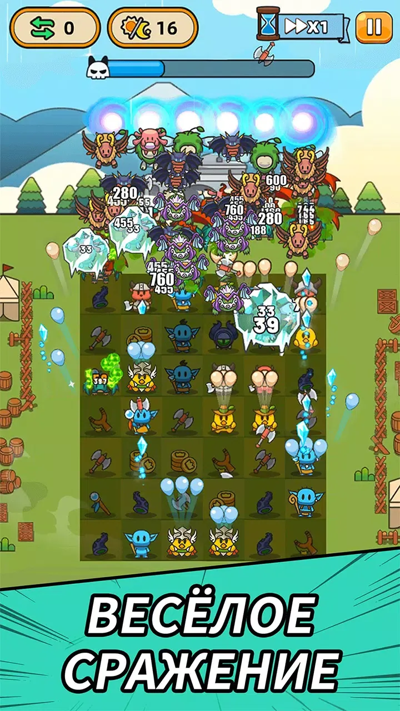
海外版本画面示意 · 仅用于个人作品展示
先接受存量框架，再找可改的变量。
历史版本缺少统一规划，部分英雄强度与品质价值脱节。全面重做成本过高，因此保留既有框架，先处理强弱失衡，再重新定义新英雄的属性区间与资源价值。
用一个新模块制造新的长期目标。
在基础养成之外加入“领主”模块，并配合 PvP 形成新的成长与竞争场景；我的职责覆盖部分运营活动、大版本功能与相关系统设计。
RELATIVE CHANGE
2024.05–2024.12 · AppMagic 监测数据
ARPU
+30%
人均时长
+25%
指数化展示，100 代表调优前基线，不是绝对收入或时长。
DEMO LAB / 02
快速试错，
也敢于叫停。
从 CPA、留存到 ROI，每个 Demo 都围绕一个明确的立项问题。 下面是 6 个有真实测试结论的代表案例。
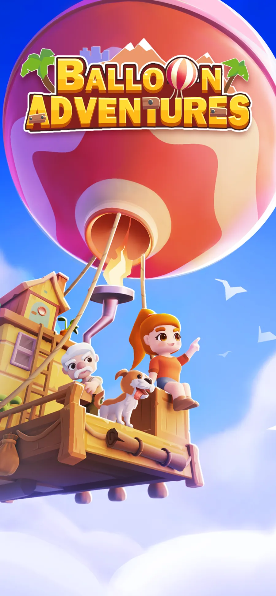
01模拟经营美国CPA
热气球经营
核心玩法能被接受，为什么留存仍起不来？
$1.43CPI
33.2%D1
0.3%付费率
判断：玩法画面有吸引力，但前期任务冗长、系统解锁过晚。后续应压缩新手流程、提前释放关键系统。
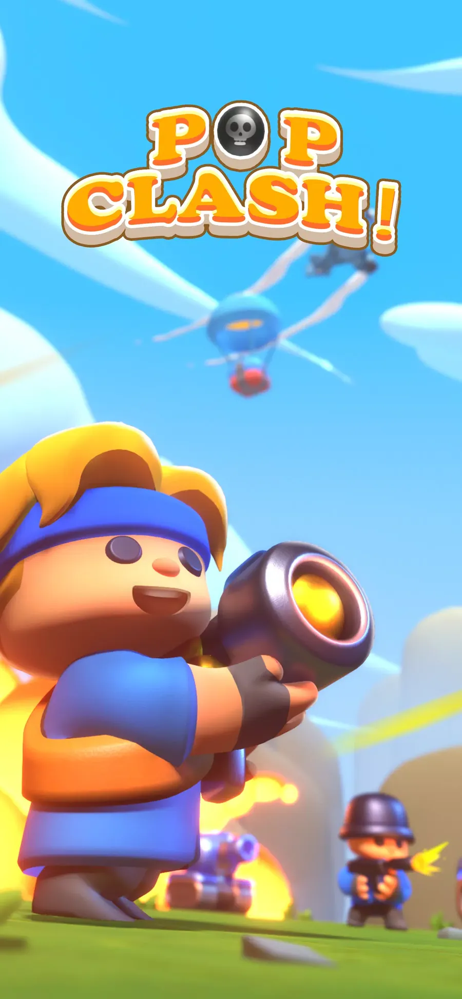
02消除 + 对冲美国CPA → 首测
消除对冲
素材与用户质量波动后，产品问题到底在哪？
$3.25首测 CPI
38.2%D1
30.15m首日时长
判断：留存玩家能够接受高失败率，真正的问题是内容新鲜度不足、角色养成没有形成推动关卡的主循环。
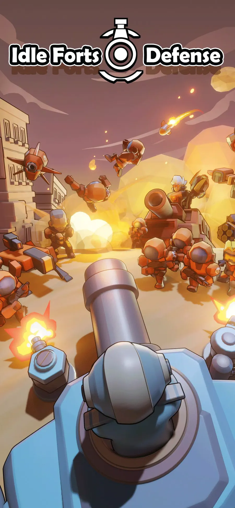
03合成塔防多地区ROI
中心塔防
当日 ROI 尚未回正，但模型预计可回收，应该扩大还是继续观察？
46.4%US 当日 ROI
3.51%US 付费率
50.9m在线时长
判断：不急着扩大研发投入，先用录屏素材持续买量，观察长线回收和价格趋势，再决定是否继续扩展。
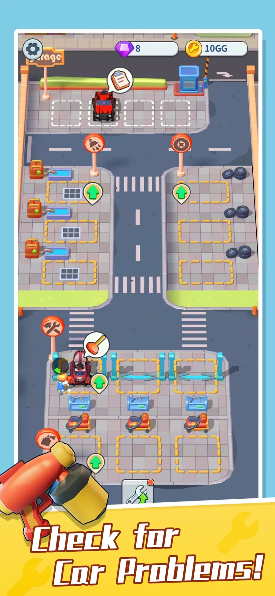
04经营模拟多地区素材验证
修车厂
低制作成本能否获得足够低的获客单价？
低 CPI美国 / 东南亚
≈5×部分市场卖出/买入 CPM
录屏主要素材来源
判断：玩法的市场接受度较高，直接录屏素材足以跑量。后续可以继续验证内购与长线回收，而不必先做高成本美宣。
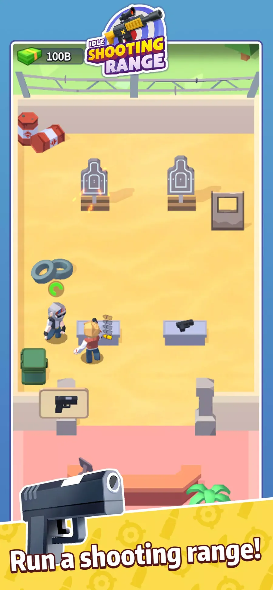
05经营射击多地区停止立项
靶场
数据未达预期时，问题是素材、玩法还是数值？
35.27%US D1
35.37m在线时长
6.09广告次数
判断：第 3 关实际使用了第 5 关难度，造成近 60% 玩家流失；同时 CPI 没有优势，停止继续制作。
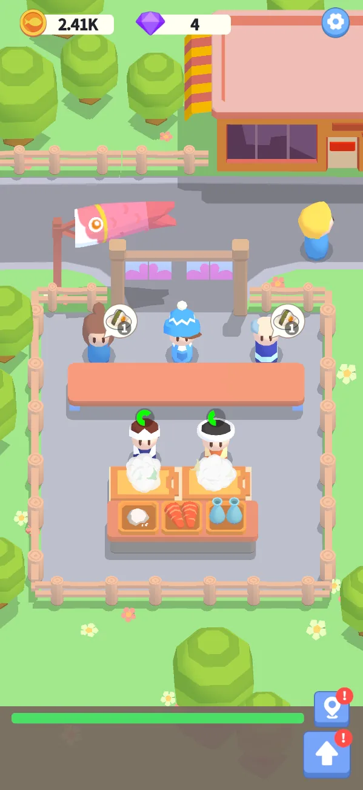
06经营模拟多地区停止推进
寿司店
同一经营框架换题材，还能保持获客优势吗？
无明显优势CPI
3.2%CTR
单关卡测试版本
判断：题材有差异，但制作量不足且获客单价没有优势。测试数据只用于方向判断，不作为长留与 LTV 结论。
我的 Demo 判断框架
先做素材用视频回答“是否吸量”
再做可玩原型回答“玩家是否理解与继续”
最后看模型回答“留存与回收能否成立”
HOW I WORK / 03
用数字判断，
用交付验证。
我的方法不是把每个问题都做成复杂模型，而是先明确当前要买到的信息，再用最便宜的手段买到它。
-
01
拆市场与核心循环
从头部产品拆核心乐趣、资源流动、广告点和付费动力，判断玩法组合是否值得进入原型。
-
02
先买信息，再买产能
素材测试 → 可玩 Demo → CPA / 留存 → ROI。每一阶段都明确“什么情况下继续，什么情况下停”。
-
03
让商业目标进入玩法
把难度、资源缺口、养成节奏和广告点位一起设计，避免上线后再用运营手段补产品结构。
-
04
把交付变成可追踪系统
里程碑、依赖、风险和范围变更都有明确负责人。AI 用于文档、配置和资源候选，不替代最终判断。
AI-ASSISTED PRODUCTION
把重复工作交给工具，把判断留给团队。
需求 / 脑图→
文档与配置→
素材候选→
人工验收→
进入版本
ABOUT / 04
从算清楚，
到带着团队做出来。
我做了 11 年游戏，最早从战斗与经济数值进入行业，后来负责完整玩法、系统框架和项目交付。 这段路径让我习惯先追问“产品为什么成立”，再决定“功能怎么落地”。
我擅长处理处在中间地带的问题：玩法已经有雏形，但商业模型不清晰；版本已经接近上线，但范围和风险失控； 数据看起来还行，但团队不知道该继续投入还是尽快止损。
先定义目标不接受“先做出来再看”的模糊立项。
保留反对意见重大取舍必须留下方案、理由和验证条件。
结果透明成功能复盘方法，失败也要留下可复用判断。
SLG、战棋、战斗与经济模型
休闲游戏、玩法原型、长线运营
海外休闲、存量调优、系统重构
国内小游戏、IAA 规模化
0→1 立项、团队、预算及发行交付
LET'S BUILD SOMETHING